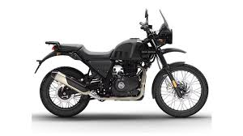
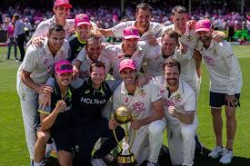
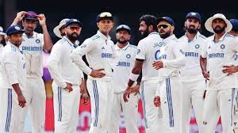

the P and DIV elements are both block elements,and they will always start on a new line and take up full width available
Inline element - SPAN
this is an inline span Hello World
element inside a paragraph.
The SPAN element is an inline element , and will not start on a new line and only take up as much width as necessary
class attribute
London
London is the capital of England
Paris
Paris is the capital of France
Tokyo
Tokyo is the capital of Japan
id attribute
Use CSS to style an element with the id "myheader"
My Header
Responsive images
when CSS width property is set in a percentage value, the image will resize according to the window
using max width property
Different images based on screen width using picture tag

Using font-size in vw
Hello World
Creating a E-Newspaper using semantics
IND vs AUS: Aussie Celebration, Indian Soul-Searching Begins
Series Highlights and Analysis

India's tour of Australia concluded with the hosts reclaiming the
Border-Gavaskar Trophy with a 3-1 series win. Despite India's initial
triumph in the 1st Test at Perth, Australia bounced back with dominant
performances in the 2nd, 4th, and 5th Tests. The 3rd Test in Brisbane
ended in a draw.Travis Head emerged as the star batter, scoring 448 runs, while
Pat Cummins and Scott Boland led the Australian bowling attack. For India,
Jasprit Bumrah stood out with 32 wickets, but his absence in the final Test
due to injury left the visitors struggling.Australia's consistency and depth highlighted
their dominance, while India's over-reliance on key players exposed areas for improvement
as they prepare for future challenges.
India's Challenges and Opportunities: Lessons from the Border-Gavaskar Trophy

India’s 3-1 loss in the Border-Gavaskar Trophy exposed
critical weaknesses, including an over-reliance on Jasprit
Bumrah, whose absence in the final Test left the bowling
attack struggling. Inconsistent middle-order batting and
missed fielding opportunities also contributed to the
defeat.Bright spots like Mohammed Siraj’s fiery spells
and Ravindra Jadeja’s all-round performances offered
hope, but India must focus on grooming young players,
improving batting against pace and bounce, and building
squad depth to tackle future overseas challenges
effectively.